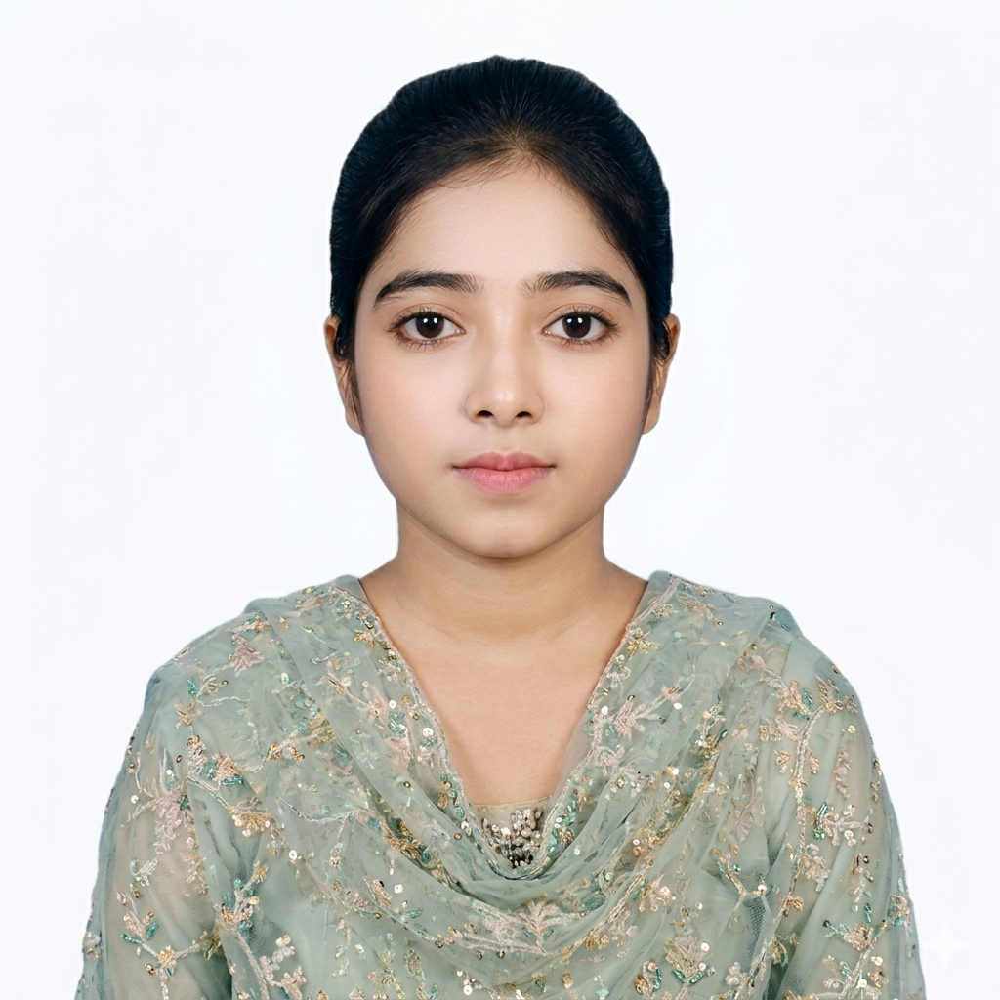

2022 — Present
BSS (Honours) in Economics
Kabi Nazrul Government College, affiliated with University of Dhaka
CGPA 3.751st Year GPA 3.832nd Year GPA 3.67
Hello, I'm Morium Akter, a BSS Economics student focused on analytical thinking, data processing, MS Office and effective communication.

Driven, detail-oriented and eager to grow through meaningful professional opportunities.
My academic training in Economics is complemented by practical skills in MS Word, MS Excel, PowerPoint, online research, communication, teamwork and time management. I aim to bring these skills into a growth-oriented organization and contribute reliably to team objectives.
Academic milestones and current progress.
Kabi Nazrul Government College, affiliated with University of Dhaka
Government Adamjeenagar M.W. College • Humanities • Dhaka Board
Shampur Sheikh Mortoza Ali High School • Humanities • Dhaka Board
Kaykarterk Nabab Habib Ulla High School • Dhaka Board
Key strengths presented in a simple professional format.
Economics background with interest in data interpretation and problem solving.
MS Office, online research and productivity tools for professional tasks.
Focused on communication, teamwork and continuous learning.
A practical mix of computer and professional skills.
Word • Excel • PowerPoint
Internet browsing & online research
Interpersonal communication
Teamwork • adaptability • time management
A quick overview of strengths and achievements.
Advanced document, spreadsheet and presentation skills.
Strong academic performance and consistency.
Continuous development through courses and certifications.
Interested in opportunities where economics, research ability, digital skills and communication can create practical value.
All certificates are securely stored on Google Drive. Click the button to view the original certificate.
UniAthena • Cambridge International Qualifications
The Asia Foundation • SAJIDA Foundation
UniAthena • Cambridge International Qualifications
International Football · Sports Analytics · Japanese Animation (Anime) · World Cinema
Selected areas showing academic interest, digital skills and professional development.
Academic learning focused on economic concepts, data interpretation and analytical thinking.
Research • AnalysisPractical experience with office applications, online tools and document preparation.
MS Office • Digital SkillsProfessional growth through training programs, certifications and skill development.
Learning • GrowthFor professional communication, feel free to reach out through email or phone.